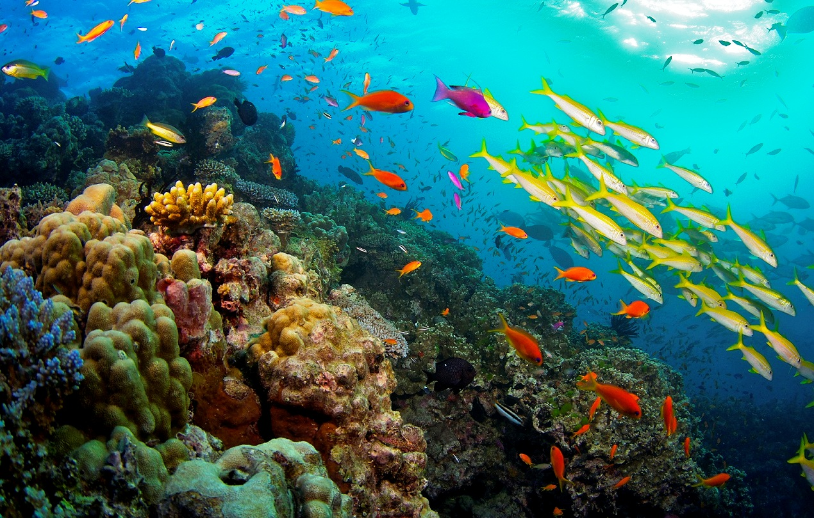

It is the sanctuary of the African black rhinoceros, and it is one of Kenya’s most important reserves.
Over the years, thanks to conservation and protection policies,
the population of black rhinos has increased by 6 per cent.
The park is also home to the largest population of Grévy’s zebras (380 individuals),
of which there are 3,000 globally.
Gran Paradiso National Park
According to the IUCN, it is one of the world’s most important protected areas.
It is Italy’s oldest park, established in 1922 (along with the National Park of Abruzzo).
Its iconic animal is the ibex, but mountains chamois, marmots and eagles can also be admired.
Zhangjiajie National Park
It is one of China’s most famous parks, and it is widely known all over
the world for its stunning landscapes. It is a UNESCO World Heritage Site
and has inspired many painters, poets and directors, including James Cameron.
In fact, Pandora’s peaks take inspiration from these mountains.
American Praire Reserve
Animal Ethics is a nonprofit organization formed to promote discussion and debate around issues in animal ethics
and to provide information and resources for animal advocates. They also do outreach work in several countries
on the issue of speciesism. Their aim is to create a world where moral consideration is extended to all sentient beings.
The organization's website covers topics such as speciesism, sentience, veganism and wild animal suffering
and has content translated into several languages.
Tchindzoulou Island
The rehabilitation centre founded by Jane Goodall has already turned twenty.
It is a sanctuary for chimpanzees, home to 150 individuals, many of which are orphans.
Visiting the centre means having a direct contact with the crucial labour carried out
by the ethologist over the years, a landmark for primates conservation all over the world.
Fjallabak Nature Reserve
Iceland’s landscape is wild, ancient, and noble. The region is named after the numerous peaks
and its modelled and coloured landscapes. The reserve is home to hundreds of vegetable species.
Białowieża Forest
It is the last large European forest. It is thousands year old, ancient,
and home to vegetable and animals species that are already extinct in the rest of the old continent.
The forest extends between north-east Poland and Belorussia. It is home to centuries-old trees
and European bison, wolves, moose and beavers.
The Australian Great Barrier Reef

It is the world’s largest marine reserve. 2,600 kilometres long,
it extends for over 340,000 square kilometres. It is a World Heritage Site,
and is home and shelter to thousands of animal and vegetable species.
Despite climate change is affecting this Pacific Ocean area, it remains a real ark of biodiversity.
Gorgona Island
Twenty kilometres off the Colombian coast, in the Pacific Ocean,
this island was declared a protected reserve in 1985. Formerly inhabited by pre-Colombian civilisations,
today it remains uninhabited. People can visit it only by booking through the Colombian tourist office.
It is a tropical island, exactly like the first places visited by Spanish conquistadores.
Northeast Greenland National Park
It is the world’s largest nature reserve with 900,000 square kilometres, most of them covered by perennial ice.
It is inhabited by the Inuit, ancient inhabitants of this harsh land. The link with nature is still deep andancestral,
and the only way to survive.